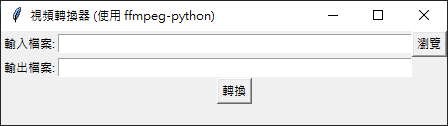

今天我要跟各位分享一個有趣的小專案 - 使用 Python 和 FFmpeg 製作的簡易視頻轉換器。這個應用程式不僅實用，還能讓我們學習到如何結合 Python 的圖形使用者介面（GUI）與強大的視頻處理工具。
專案概述

這個視頻轉換器具有以下特點：
- 簡潔的圖形使用者介面
- 可以選擇輸入檔案和指定輸出檔案
- 使用 FFmpeg 進行視頻轉換
- 顯示轉換狀態和錯誤訊息
使用的技術
- Python：程式的主要語言
- tkinter：Python 的標準 GUI 函式庫
- ffmpeg-python：FFmpeg 的 Python 綁定，用於視頻處理
1 | # 導入必要的模組 |
程式碼解析
讓我們來看看這個應用程式的主要組成部分：
- 導入必要模組：
我們導入了 ffmpeg、tkinter 以及 filedialog 和 messagebox。這些模組分別用於視頻處理、創建 GUI 和處理檔案選擇。 - 檔案選擇功能：
select_file() 函數使用 filedialog.askopenfilename() 來開啟檔案選擇對話框，讓使用者可以輕鬆選擇要轉換的視頻檔案。 - 視頻轉換功能：
convert_video() 函數是這個應用程式的核心。它使用 ffmpeg-python 來讀取輸入檔案、設定輸出參數並執行轉換。如果轉換成功，會顯示成功訊息；如果失敗，則顯示錯誤訊息。 - 創建 GUI：
我們使用 tkinter 創建了一個簡單的視窗，包含輸入檔案和輸出檔案的輸入框、瀏覽按鈕、轉換按鈕和狀態標籤。
如何使用
- 啟動應用程式後，你會看到一個簡單的視窗。
- 點擊「瀏覽」按鈕選擇要轉換的視頻檔案。
- 在「輸出檔案」欄位中輸入想要的輸出檔案名稱（記得加上副檔名）。
- 點擊「轉換」按鈕開始轉換過程。
- 轉換完成後，狀態標籤會顯示成功或失敗的訊息。
注意事項
請確保你的系統上已安裝 FFmpeg。
這個程式使用了 FFmpeg 的預設參數進行轉換。如果你需要更多自訂選項，可以修改 convert_video() 函數中的 ffmpeg.output() 部分。
結語
這個簡單的視頻轉換器展示了如何將強大的命令列工具（FFmpeg）與用戶友善的圖形介面結合。雖然這只是一個基礎版本，但你可以根據自己的需求進行擴展，例如增加更多的轉換選項、支援批次處理等。
本部落格所有文章除特別聲明外，均採用CC BY-NC-SA 4.0 授權協議。轉載請註明來源 kyosora 筆記！
相關推薦

2024-12-21
寫 HEXO 部落格更有效率！跨平台桌面編輯器推薦
你有遇過這些寫 HEXO 部落格的小困擾嗎？ 一邊寫文章一邊要切換視窗預覽效果 想要快速修改文章的標題、分類和標籤要手動改 YAML 分類和標籤越來越多，不知道之前用過哪些 想要備份所有文章，還要自己一個一個找檔案 如果有類似困擾的話，不妨試試看這個專為 HEXO 部落客設計的桌面編輯器 - HEXO Editor Desktop！ 🌟 HEXO Editor 有什麼特別的？這是一款開源的跨平台編輯器，專注於改善 HEXO 部落客的寫作體驗。透過圖形化介面，讓你可以更專注在內容創作上。 主要功能 一站式編輯環境 Markdown 編輯器配合即時預覽功能 圖形化設定 Front Matter 分割畫面設計，編輯和預覽一次搞定 分類標籤管理 支援多層級分類 顯示標籤使用統計 自動完成建議功能 實用功能 支援快速鍵（如 Ctrl+S 儲存） 可搜尋過濾文章 一鍵備份匯出 支援多種作業系統 Windows macOS Linux 💡 實際操作介紹1. 寫作流程開啟程式後： 選擇你的 HEXO 部落格資料夾 在左側列表中尋找或搜尋文章 使用右側編輯區修改...
2026-04-10
以為寫完了：Claude Code 觀測 digest 的兩次設計
我一直以為 Claude Code 在靜默觀測我做的每件事。裝了 continuous-learning-v2 這個 skill，規則寫著「每輪對話自動抽取模式」、「任務結束時主動寫入知識庫」，加上 auto-skill 把產出綁到 Obsidian Vault——聽起來就像我敲的每一行指令都會被默默萃取成經驗。 然後我打開 Vault 的 auto-skill/experience/ 看一眼。 7 筆。 9 天 7 筆，其中 6 筆是某個下午當場叫 Claude 記的。真正「自動」產出的是 0 筆。 我愣了一下——這兩週敲出來的幾千次工具呼叫到底去了哪裡？還是根本沒被記？ 規則沒壞，但產出為零auto-skill 的規則是這樣設計的：每輪對話抽關鍵詞、判斷話題切換、符合條件才主動問使用者要不要寫入。理論上很精巧，每次任務結束都會評估一下「這次解決的問題下次還能用嗎」，可以就寫。 問題是這個評估是我執行的，而我是一個對話結束就消失的程序。每一代 session 用自己那輪的「品質標準」判斷，標準會漂移，多數日常工作我會覺得「這沒什麼特別」就跳過。結果 9 天產出 1 筆自動紀錄。...
2024-08-06
深入解析:使用Python構建全面的市場風險監測工具
專案網址 深入解析:使用Python構建全面的市場風險監測工具七月的時候因為許多的利空事件極短時間內發生，結果全球股災，來的速度太快結果都被套牢了，所以想著開發一個使用Python市場風險監測工具，該工具能夠分析多個市場指標，計算風險評分，並提供直觀的視覺化結果。 1. 程式概述這個Python程式主要實現以下功能: 從Yahoo Finance獲取多個市場的歷史數據 計算各市場的波動性和異常情況 基於波動性和異常情況評估市場風險 使用機器學習方法對市場狀態進行聚類 生成多種視覺化圖表以直觀展示分析結果 程式使用了多個Python庫，包括pandas用於數據處理，sklearn用於機器學習算法，yfinance用於獲取市場數據，以及matplotlib和seaborn用於數據可視化。 2. 核心功能詳解2.1 數據獲取程式使用yfinance庫從Yahoo Finance獲取過去90天的市場數據: 123456def get_date_range(): end_date = datetime.now().date() start_date = end_date...
2025-04-18
告別Python套件地獄：為何資深工程師都在改用uv取代venv和conda？
前言：虛擬環境，工程師的日常痛點作為一名Python開發者，你是否曾經歷過以下場景：專案套件版本衝突、環境設定耗時、安裝速度慢到讓你有時間泡一杯咖啡再回來？我想，大多數Python開發者都曾面臨這些挑戰。虛擬環境工具本應是解決這些問題的救星，但有時反而成了新的麻煩來源。 在我的Python生涯中，我從最初的venv，到後來的conda，再到最近發現的uv，走過了一段「尋找完美虛擬環境工具」的旅程。今天，我想分享這段旅程，以及為什麼我最終選擇了uv作為我的首選工具。 venv：Python的原生解決方案什麼是venv？venv是Python 3.3後內建的虛擬環境創建工具，它的主要優點是「官方、內建、無需額外安裝」。使用venv非常簡單： 12python -m venv myenvsource myenv/bin/activate # 在Windows上使用 myenv\Scripts\activate venv的優點 輕量級：不需要額外安裝，Python自帶 簡單直接：概念容易理解，指令簡潔 官方支援：作為Python官方推薦的解決方案，有良好的文件支援 venv的痛點 ...
2024-08-22
效能狂飆100倍！認識Python精神繼承者Mojo程式語言
什麼是Mojo程式語言?想像一個程式語言,它繼承了Python的簡潔易用,卻能提供與C++相媲美的極致效能,這就是Mojo程式語言。由Swift語言創始者Chris Lattner領軍開發的Mojo,被視為Python的超集合(superset),為AI和高效能運算開啟了新篇章。 為什麼我們需要Mojo?Python雖然是全球最受歡迎的程式語言之一,但在效能方面一直為人所詬病。特別是在AI和機器學習領域,Python的執行速度常常成為效能瓶頸。Mojo就是為了解決這個問題而生,它讓開發者能夠: 使用熟悉的Python語法 獲得接近原生程式碼的執行效能 無需重寫既有的Python程式碼 擁有更好的記憶體管理機制 Python vs Mojo 效能比較 執行時間 (毫秒) Python 100ms Mojo 1ms Python Mojo Mojo的關鍵特色1. Pytho...

2024-12-23
Python程式打包成exe檔案的指南 - 使用PyInstaller打包PySide6應用程式
在開發完Python程式後,常常會需要將程式打包成exe檔案,方便在其他電腦上執行。本文將詳細說明如何使用PyInstaller工具,將Python程式打包成獨立的執行檔。特別針對使用PySide6開發的GUI應用程式,提供完整的打包設定和解決方案。 打包工具介紹PyInstaller是目前最流行的Python打包工具之一,它可以: 將Python程式和所需的函式庫打包成單一執行檔 自動分析程式相依性 支援多種Python套件 跨平台打包支援 打包的基本步驟1. 安裝PyInstaller首先需要安裝PyInstaller套件: 1pip install pyinstaller 2. 準備打包環境在打包之前,建議先建立一個獨立的虛擬環境: 1234567891011# 建立虛擬環境python -m venv venv# 啟動虛擬環境# Windowsvenv\Scripts\activate# Linux/Macsource venv/bin/activate# 安裝必要套件pip install -r requirements.txt 3. PySide6特殊設定使用...
評論